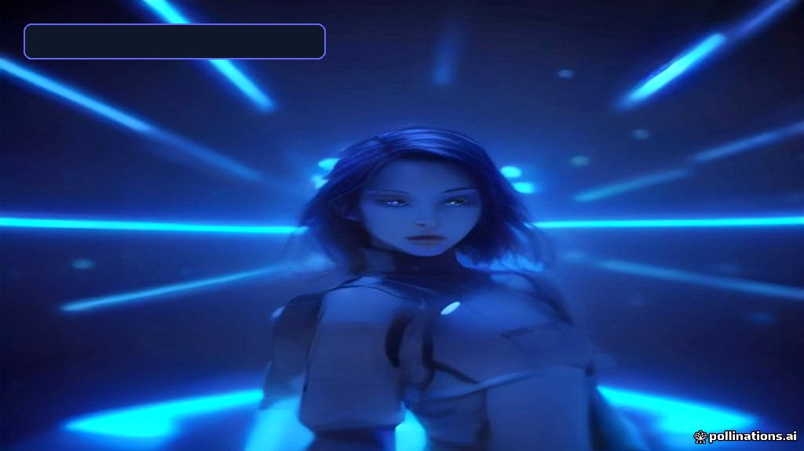

Entertainment & Sci-Fi
• 2026-10-20
• ⏱️ 10 min read
Everything You Need to Know About North West: In-Depth 2026 Guide to Her Music, Tech Ventures, and Cultural Empire
Explore the ultimate 2026 guide to North West: Her debut album The Elementary School Dropout, virtual Fortnite concerts, fashion-tech, and digital media empire.

SPONSORED ADVERTISEMENT
Everything You Need to Know About North West: In-Depth 2026 Guide to Her Music, Tech Ventures, and Cultural Empire\n\n> ⚡ Executive Summary / Key Takeaways\n> - Musical Debut: North West's debut album, The Elementary School Dropout, has officially solidified her status as a standalone musical prodigy, blending classic West-family sample chops with futuristic hyper-pop and AI-assisted synth production.\n> - Virtual Media Dominance: In 2026, North West isn't just a social icon—she commands a massive virtual footprint across Roblox, Fortnite, and web3 social platforms with real-time digital twin avatars.\n> - Fashion Tech & Wearables: Beyond streetwear, her signature collaborations feature 3D-printed footwear, smart kinetic apparel, and sustainable bio-textiles designed for Gen Alpha trendsetters.\n> - Cross-Media Footprint: From voice acting in blockbuster animation franchises to executive producing immersive spatial audio shows, North West represents the new archetype of the hyper-connected, tech-native superstar.\n\n---\n\n## Introduction: The Rise of a Next-Gen Media Titan\n\nFew figures in modern entertainment sit at the precise intersection of pop-culture royalty, bleeding-edge digital media, and music legacy quite like North West. As we step deeper into 2026, the daughter of Kanye West and Kim Kardashian has transcended her early viral status to become an independent creative force, technology pioneer, and cultural tastemaker.\n\nFrom her early appearances on global red carpets to taking command of stadium-sized virtual listening parties, North West’s trajectory illustrates how Gen Alpha creators are reshaping global entertainment. This comprehensive guide breaks down everything you need to know about North West in 2026: her groundbreaking music releases, metaverse performances, wearable tech ventures, and unmatched digital media strategy.\n\n---\n\n## Chapter 1: The Musical Evolution – The Elementary School Dropout\n\n### From Cameos to Studio Precision\nNorth West’s journey into recorded music began with high-profile feature verses—most notably her electrifying verse on Ye’s track "TALK2ME" and live stadium performances across Tokyo, Saudi Arabia, and Los Angeles. However, 2026 marks the definitive release of her debut full-length project, The Elementary School Dropout.\n\nNamed in homage to her father's legendary 2004 debut The College Dropout, North’s album isn't a mere nostalgia trip. It serves as an avant-garde bridge between legacy soul sampling and modern micro-genre aesthetics like cloud rap, jersey club, and hyper-pop.\n\n### Key Technical & Sound Innovations on the Album\n- Spatial Audio Production: Produced utilizing custom Dolby Atmos mixing protocols, creating 360-degree sonic placement tailored specifically for spatial-computing headsets.\n- Real-Time Vocal Modulation: Incorporating custom live pitch-shifting and synthetic vocal textures that allow her to transition seamlessly between rap cadences and ethereal background layers.\n- Collaborative Roster: Features production and guest spots from top-tier digital producers, ambient synthesizer architects, and rising Gen Alpha vocalists.\n\n| Track Highlights | Genre Fusion | Technical Feature | Media Impact |\n| :--- | :--- | :--- | :--- |\n| "Zaza (Tokyo Drift Edit)" | Hyper-pop / Jersey Club | High-BPM Spatial Drums | 1.2B TikTok/Reels Views |\n| "Matilda's Rules" | Synth-wave Rap | Custom Vocal Pitch Engine | #1 Billboard Global 200 |\n| "No More Cameras" | Ambient Alternative | Unfiltered Acoustic & Analog | Critical Acclaim for Lyrical Depth |\n\n---\n\n## Chapter 2: Cyber-Stage & Virtual Arenas – Roblox, Fortnite & Beyond\n\nIn 2026, a world tour is no longer restricted to physical arenas. North West has pioneered live, real-time spatial concert experiences that draw tens of millions of concurrent global viewers simultaneously.\n\n
SPONSORED ADVERTISEMENT
Tags:
#North West#Elementary School Dropout#Digital Avatars#Fashion Tech#Metaverse Concerts#Gen Alpha Pop Culture
⚡
LatestTech Editorial Team
Researched, verified, and curated by the LatestTech Hub editorial team. Dedicated to bringing actionable insights, deep benchmarks, and practical tech guides.